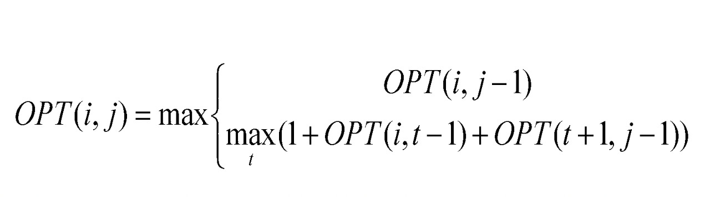

The RNA Folding Algorithm involves a DP table where every state dp[i][j] is defined as the maximum number of base pairs in a secondary structure for the range b
i , b
i+1 , ...... , b
j.
For every state the optimal value will be the one of the following :-
- If j is not a member of a pair, use dp[i][j-1]
-
If j pairs with some t < j - 4, then we will get 2 independent subproblems dp[i][t-1] and dp[t+1][j-1].
The following recurrence holds ->
